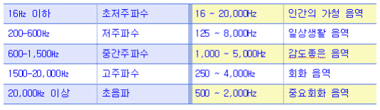
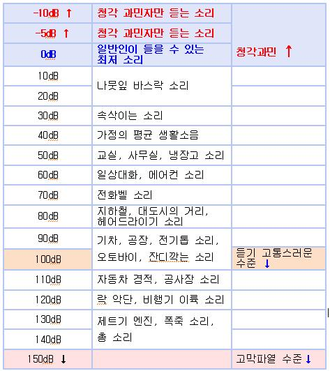

소리는 물체의 마찰로 인한 공기의 진동이나 기체의 흐름에 의하여 발생합니다. 소리의 주요 특성은 주파수(Hz)와 데시벨(dB)에 의하여 결정됩니다.
1) 소리 주파수(Hz)
음파의 초당 진동수를 주파수라 하고, 헤르츠(Hz) 단위로 표기합니다. 700Hz의 음은 1초간에 700회의 진동을 하고 있다는 의미이며, 진동수가 빠를수록(많을수록) Hz가 높고 높은 음에 해당됩니다. 인간의 가청 범위 밖에 있는 16Hz 이하의 소리는 초저주파음이라고 하고, 20,000Hz 이상을 초음파라고 합니다.
주파수 범위는 0 ~ 무한대이지만, 인간의 가청주파수(사람이 들을 수 있는 주파수)의 범위는 16 ~ 20,000Hz입니다. 가청 주파수는 사람에 따라 다소의 차이가 나며, 나이가 들면 일반적으로 고주파수대 청력이 점진적으로 떨어지는 경향이 있습니다. 사람에게 감도가 가장 좋은 주파수의 범위는 1,000~5,000Hz이고, 일상생활 중 소리(회화음역)는 대부분 125 ~ 8000Hz이며, 회화음역은 250 ~ 4,000Hz이며, 중요 회화음역은 500 ~ 2,000Hz에 속합니다. AIT음악의 주파수 대역은 30 ~ 15,000Hz입니다. <표 1> 주파수 음역 참조.

2) 소리 크기(dB)
소리의 크기를 나타내는 단위는 데시벨(dB)입니다. 음파의 진폭은 소리가 전달되는 힘이며 소리의 크기에 해당됩니다. 데시벨(dB)은 사람이 들을 수 있는 최저 수준을 0dB로 하여 척도를 정한 것으로, dB의 수치가 클수록 큰 소리를 의미합니다. <표 2> 환경음의 소리크기 수준 참조.

!--